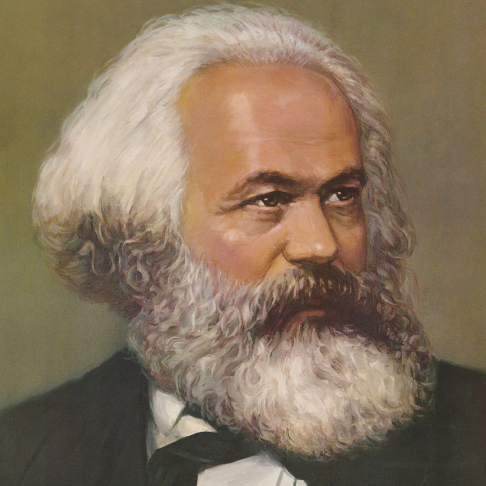
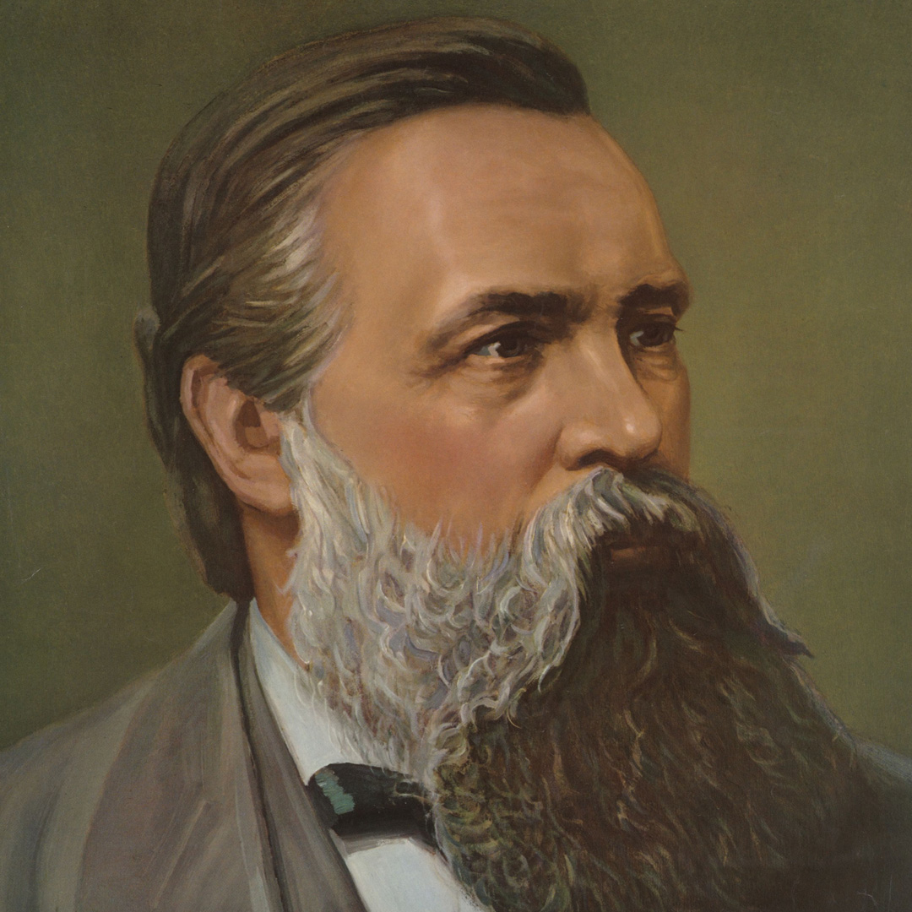
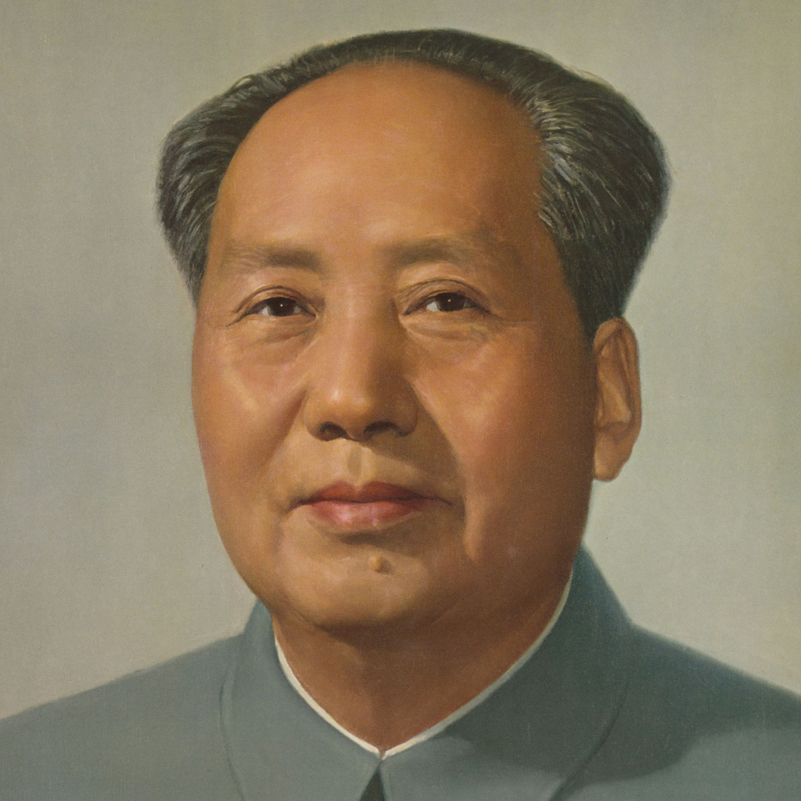
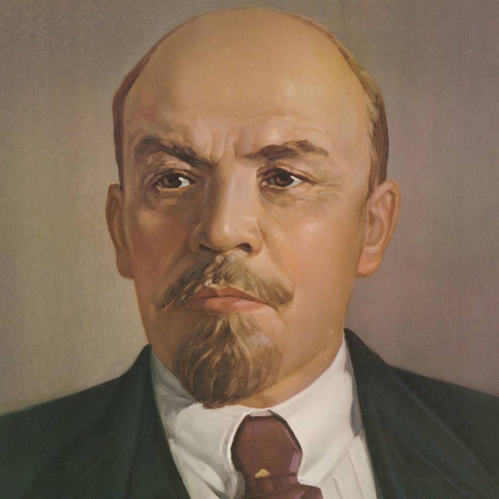
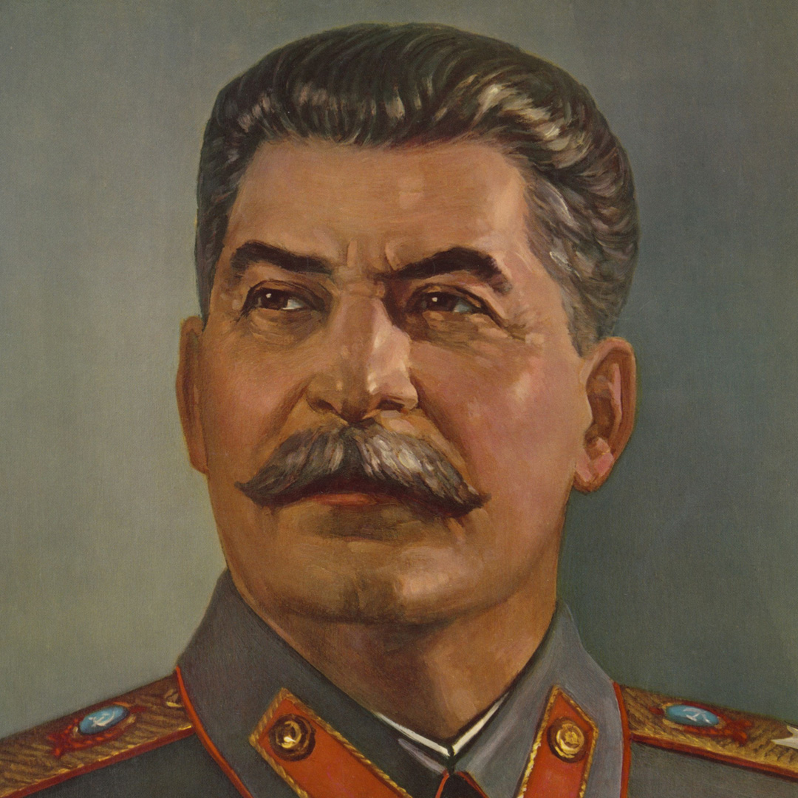

在这里阅读马克思、恩格斯、列宁、斯大林、毛泽东等革命导师的经典著作，深入理解马克思主义理论的精髓。
毛泽东 · 1938年5月 · 军事战略
面对强大的对手，如何在时间维度上规划斗争节奏
毛泽东 · 1937年7月 · 哲学基础
认识与实践的辩证关系，知与行的统一
毛泽东 · 1937年8月 · 哲学基础
唯物辩证法的核心，分析矛盾的主次与性质

科学社会主义创始人

马克思的亲密战友

马克思主义中国化开拓者

帝国主义时代马克思主义者

苏联社会主义建设领导者
唯物辩证法、认识论、历史唯物主义核心概念
统一战线、武装斗争、党的建设三大法宝
重要著作的论证结构和学习方法
经典著作不是孤立的——它们是一个有机整体。理论拼图将所有文章定位在马哲体系中，帮助你看清每篇文章的理论坐标与相互联系。
——未完待续——